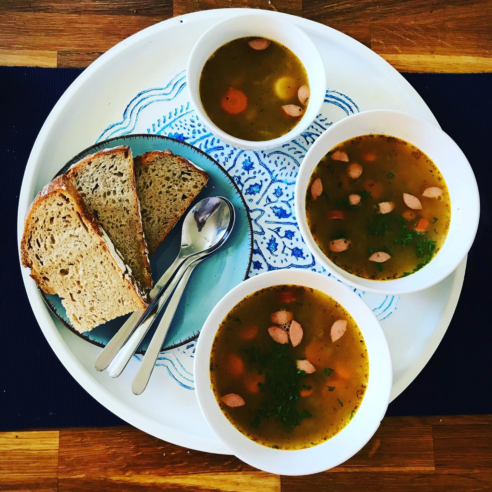

Hrstková polievka podľa @schwammellenka — Normy Jedál
Hŕstková polievka s párkom a vlastným kváskovým chlebíkom, pripravená na piknik v našom altánku. Deťom viac chutí vonku. Recept:
Opečieme osolenú cibuľku a pridame čierne korenie, nakrájanú mrkvu, petržlen, zemiaky prehrejem na cibuľke, podlejem vodou a pridám strukovinovú zmes ( biela fazuľa, strakatá malá fazuľa, zelená a červená šošovica, žltý a zelený suchý hrach a mungo) uvarím do mäkka, nakoniec pridám pretlačený cesnak, nakrájaný párok, majorán a nechám prevrieť. Potom na tanieri ozdobim petržlenovou vňaťou a pažítkou. Moje malé R si ešte dalo dupľu 😉😁 #hrstkova #hrstkovapolevka #hrstkovapolievka #cookingmom #homechef #mamavari #prerodinu #neodolatelnedobre #domacejedomace #polievkajezaklad #polevkajegrunt #homemadefood #foodpic #instafood #picnic#foodblogger #foodblog